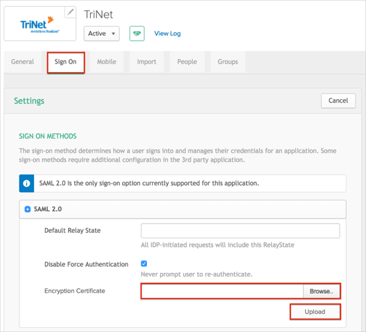

Contact the TriNet Support team and request that they enable SAML 2.0 for your account.
Include the following IDP Metadata URL:
Sign into the Okta Admin dashboard to generate this value.
Save the following certificate as trinet.cert:
-----BEGIN CERTIFICATE----- MIIFJzCCBA+gAwIBAgIMfo8uRgAAAABQ15N+MA0GCSqGSIb3DQEBCwUAMIG6MQswCQYDVQQGEwJV UzEWMBQGA1UEChMNRW50cnVzdCwgSW5jLjEoMCYGA1UECxMfU2VlIHd3dy5lbnRydXN0Lm5ldC9s ZWdhbC10ZXJtczE5MDcGA1UECxMwKGMpIDIwMTIgRW50cnVzdCwgSW5jLiAtIGZvciBhdXRob3Jp emVkIHVzZSBvbmx5MS4wLAYDVQQDEyVFbnRydXN0IENlcnRpZmljYXRpb24gQXV0aG9yaXR5IC0g TDFLMB4XDTE2MDMyOTIxMjUyMFoXDTE5MDMyOTIxNTUxOFowbDELMAkGA1UEBhMCVVMxEzARBgNV BAgTCkNhbGlmb3JuaWExFDASBgNVBAcTC1NhbiBMZWFuZHJvMRkwFwYDVQQKExBUcmlOZXQgR3Jv dXAgSW5jMRcwFQYDVQQDEw5zc28udHJpbmV0LmNvbTCCASIwDQYJKoZIhvcNAQEBBQADggEPADCC AQoCggEBAM5SGCTRODidq0RdIJyJr4K57u+pOs38DczsEWlo+Iphx7GtSo7AH+ChYauvXxfPYGv6 mF/l8Ye6bHLZFcQRBZiHEsx5MTCUY9XP/HODPN9USvYfoGWqU0WkVDr6HAamfm3/GX8OSRWGSzY4 1cnn1jF9FqIlFGwH0n3HXwLYgXscQGv6NeMrnqsbafPILBOeAwjGWo8JGkiXZsPQWMm+1LOCbVsC U5BqT/exZL6twXxRJow3y93SW4aoZ8YMxvd4Y4uXhA/HjLentLKiMoX4a2LtxDra1k0b1ZWdETca KYmfup6J2kKjhdD/scAQSTMW5JRHfD3SZAohbYoMnLw6nMcCAwEAAaOCAXgwggF0MAsGA1UdDwQE AwIFoDATBgNVHSUEDDAKBggrBgEFBQcDATAzBgNVHR8ELDAqMCigJqAkhiJodHRwOi8vY3JsLmVu dHJ1c3QubmV0L2xldmVsMWsuY3JsMEsGA1UdIAREMEIwNgYKYIZIAYb6bAoBBTAoMCYGCCsGAQUF BwIBFhpodHRwOi8vd3d3LmVudHJ1c3QubmV0L3JwYTAIBgZngQwBAgIwaAYIKwYBBQUHAQEEXDBa MCMGCCsGAQUFBzABhhdodHRwOi8vb2NzcC5lbnRydXN0Lm5ldDAzBggrBgEFBQcwAoYnaHR0cDov L2FpYS5lbnRydXN0Lm5ldC9sMWstY2hhaW4yNTYuY2VyMBkGA1UdEQQSMBCCDnNzby50cmluZXQu Y29tMB8GA1UdIwQYMBaAFIKicHTdvFM/z3vU981/p2DGCky/MB0GA1UdDgQWBBRWyiYkh5sy5CQL jskKIb9ZdB5wszAJBgNVHRMEAjAAMA0GCSqGSIb3DQEBCwUAA4IBAQBbXd5EHLFp9QDUikAQBXaR W/43vVTCi9SNc3JlMmp1kciqa+Qo3KjiXFeMVy52wjjYDzjLcbjL1GdSgfF5+65K9YDaQ+iMaKZZ xV6OjDnUzL6aAgYygbDev4fYZ8E6t8w/TQCpxc4E5sD07Zt30a9dFNt9uW4QEarYqIDj2YeNGrQj dNyq+lRe65uKTtWT6Zz7kdr5x/LGp66dw5X7vrpG2gs75vwiANvfFhW16OtmkHd2xJWitLi4HWDe y2J9kmthrZI/NU+St2BT+xT3PoG6/kvXc0u7oLdVis19r4jD6JsxScfpvgQuyL8aXCv1fGjaw7+X FTaoA4C3B1eyRtWt -----END CERTIFICATE-----
In Okta, select the Sign On tab for the TriNet app, then click Edit:
For Encryption Certificate, click Browse to locate the trinet.cert certificate you saved earlier, then click Upload as shown below.
Click Save.

The TriNet Support team will process your request. After receiving a confirmation email, you can start assigning people to the application.
Done!
Notes:
IdP-initiated flows are supported.
SP-initiated flows and Just In Time (JIT) provisioning are not supported.